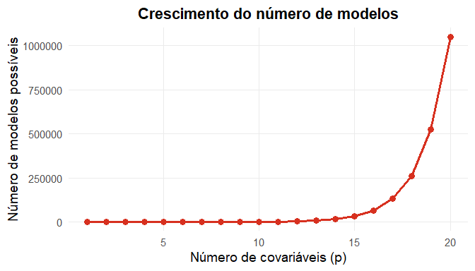
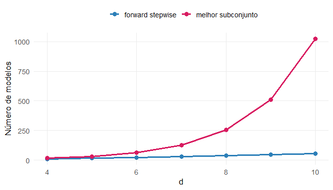
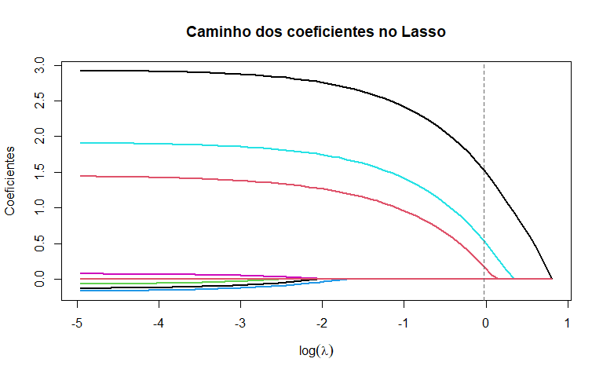

Métodos Paramétricos em Altas Dimensões
Quando o número de covariáveis é grande, uma estratégia natural é remover algumas variáveis do modelo.
O objetivo é reduzir a variância da função de predição estimada.
Ao retirar algumas covariáveis do modelo:
Esse é mais um exemplo do trade-off viés–variância.
Se algumas covariáveis possuem pouca ou nenhuma relação com a resposta \(\boldsymbol{y}\), então removê-las:
Como consequência, o poder preditivo do modelo pode aumentar.
A solução consiste em encontrar um subconjunto de covariáveis
\[ S \subset \{1,2,\dots,p\} \]
que produza o melhor desempenho preditivo.
Podemos escrever o problema como
\[ \hat{\boldsymbol{\beta}}_{L_0} = \arg\min_{\beta_0 \in \mathbb{R}, \boldsymbol{\beta} \in \mathbb{R}^p} \sum_{k=1}^{n} \left( y_k - \beta_0 - \sum_{i=1}^{p} \beta_i x_{k,i} \right)^2 + \lambda \sum_{i=1}^{p} I(\beta_i \neq 0) \]
A função objetivo possui duas partes:
1️⃣ Erro de ajuste
\[ \sum_{k=1}^{n} \left( y_k - \beta_0 - \sum_{i=1}^{p} \beta_i x_{k,i} \right)^2 \]
mede o erro quadrático de treinamento.
2️⃣ Penalização pela complexidade
\[ \lambda \sum_{i=1}^{p} I(\beta_i \neq 0) \]
conta quantos coeficientes são diferentes de zero.
Ou seja, penaliza modelos com muitas variáveis.
O parâmetro \(\lambda\) controla o compromisso entre:
Quanto maior \(\lambda\):
Quando \(\lambda = 0\) não existe penalização.
Nesse caso, \(\hat{\beta}_{L_0}\) coincide com o estimador de mínimos quadrados.
Ou seja:
É importante notar que não há penalização para \(\beta_0\)
Para um valor específico de \(\lambda = \dfrac{2 \hat{\sigma}^2}{n}\), encontrar a solução para \(\hat{\boldsymbol{\beta}}_{L_0}\) equivale a buscar entre todos os modelos da classe
\[ G = \{g(x)\} \]
que correspondem a diferentes subconjuntos de covariáveis.
Por exemplo:
\[ \begin{aligned} G = \{g(\mathbf{x})&=\hat{\beta}_0,\\ g(\mathbf{x}) &=\hat{\beta}_0+\hat{\beta}_1 x_1\\ g(\mathbf{x}) &=\hat{\beta}_0+\hat{\beta}_2 x_2 \\ \vdots\\ g(\mathbf{x}) &=\hat{\beta}_0+\hat{\beta}_p x_p \\ g(\mathbf{x}) &=\hat{\beta}_0+\hat{\beta}_1 x_1+\hat{\beta}_2 x_2\\ g(\mathbf{x}) &=\hat{\beta}_0+\hat{\beta}_1 x_1+\hat{\beta}_3 x_3\\ \vdots\\ g(\mathbf{x}) &=\hat{\beta}_0+\hat{\beta}_1 x_1+\hat{\beta}_2 x_2+\cdots+\hat{\beta}_p x_p\} \end{aligned} \]
Uma estratégia é ajustar cada um dos \(2^p\) modelos e comparar seus desempenhos.
Para isso utilizamos critérios de seleção de modelos, como:
O modelo escolhido é aquele que apresenta o menor risco estimado.
Apesar da ideia ser conceitualmente simples, resolver o problema exatamente pode ser computacionalmente caro.
Se existem \(p\) covariáveis, então existem \(2^p\) subconjuntos possíveis de variáveis.
Logo, precisaríamos ajustar \(2^p\) modelos diferentes.
Por exemplo:

Uma solução é utilizar heurísticas que exploram apenas uma pequena parte do espaço de modelos, mas ainda assim produzem modelos com baixo erro preditivo.
Ou seja, buscamos uma aproximação da solução ótima, sem precisar avaliar todos os \(2^p\) modelos.
Uma família de algoritmos que utiliza essa ideia é chamada de regressão stepwise.
Esses métodos analisam apenas um subconjunto dos modelos possíveis, reduzindo drasticamente o custo computacional.
Os métodos stepwise constroem o modelo sequencialmente, adicionando ou removendo variáveis.
Em cada etapa, o algoritmo avalia um pequeno conjunto de candidatos e escolhe o modelo que melhora mais o critério de ajuste.
Existem três variantes clássicas:
O método forward stepwise constrói o modelo sequencialmente, adicionando uma variável por vez.
Em cada etapa escolhemos a variável que mais reduz o risco estimado (por exemplo, usando AIC ou validação cruzada).
Para cada variável \(X_j\), com \(j=1,\dots,p\), ajustamos o modelo
\[ Y = \beta_j X_j + \varepsilon \]
e estimamos o risco \(\hat{R}(g_j)\). Escolhemos
\[ \hat{j} = \arg\min_j \hat{R}(g_j) \]
e definimos \(S = \{\hat{j}\}\).
Para cada variável \(j \notin S\), ajustamos
\[ Y = \beta_j X_j + \sum_{s \in S} \beta_s X_s + \varepsilon \]
Calculamos novamente o risco estimado \(\hat{R}(g_j)\). Selecionamos
\[ \hat{j} = \arg\min_{j \notin S} \hat{R}(g_j) \]
e atualizamos \(S \leftarrow S \cup \{\hat{j}\}.\)
Repetimos o processo:
O procedimento continua até:
Ao final, escolhemos o modelo com menor risco estimado ao longo da sequência de modelos gerados.
No best subset selection precisaríamos avaliar \(2^p\) modelos.
No forward stepwise precisamos ajustar apenas
\[ 1 + \frac{p(p+1)}{2} \]
modelos.
Isso representa uma redução enorme no custo computacional.

O Lasso (Least Absolute Shrinkage and Selection Operator) foi proposto por Tibshirani (1996).
Seu objetivo é encontrar um estimador da regressão linear que tenha menor risco preditivo que o método de mínimos quadrados.
Assim como em outros métodos de regularização, o Lasso busca minimizar:
A função objetivo é
\[ \hat{\beta}_{L_1,\lambda} = \arg\min_{\beta} \sum_{k=1}^{n} \left( y_k - \beta_0 - \sum_{j=1}^{p} \beta_j x_{k,j} \right)^2 + \lambda \sum_{j=1}^{p} |\beta_j| \]
No Lasso, a complexidade do modelo é medida pela norma \(L_1\):
\[ \sum_{j=1}^{p} |\beta_j| \]
Essa penalização favorece modelos com coeficientes pequenos e frequentemente iguais a zero.
Por isso, o Lasso realiza seleção automática de variáveis.
Nos métodos de seleção de variáveis clássicos utilizamos a penalização
\[ \sum_{j=1}^{p} I(\beta_j \neq 0) \]
que corresponde à norma \(L_0\).
No Lasso utilizamos
\[ \sum_{j=1}^{p} |\beta_j| \]
que é a norma \(L_1\).
Essa substituição torna o problema computacionalmente muito mais fácil de resolver.
Em relação a métodos como stepwise selection, o Lasso possui:
Cada valor do parâmetro de regularização \(\lambda\) produz um conjunto diferente de coeficientes
\[ \hat{\beta}_{L_1,\lambda} \]
Esse parâmetro controla o grau de penalização aplicado ao modelo.
Quando \(\lambda = 0\) o problema do Lasso se reduz a
\[ \min_\beta \sum_{k=1}^{n} \left( y_k - \beta_0 - \sum_{j=1}^{p}\beta_j x_{k,j} \right)^2 \]
ou seja, ao estimador de mínimos quadrados.
Neste caso:
Quando \(\lambda\) cresce, o termo de penalização domina:
\[ \sum_{k=1}^{n} \left( y_k - \beta_0 - \sum_{j=1}^{p}\beta_j x_{k,j} \right)^2 + \lambda \sum_{j=1}^{p} |\beta_j| \;\approx\; \lambda \sum_{j=1}^{p} |\beta_j| \]
Nesse caso, a solução tende a
\[ \hat{\beta}_1 = \cdots = \hat{\beta}_p = 0 \]
Portanto:
Na prática, \(\lambda\) é escolhido por validação cruzada.
Procedimento:
Esse processo está ilustrado no caminho de regularização do Lasso.

Uma alternativa ao Lasso é a Regressão Ridge, introduzida por Hoerl and Kennard (1970). A ideia é buscar um modelo que minimize simultaneamente:
Na regressão Ridge isso é feito penalizando a norma \(L_2\) dos coeficientes.
O estimador da regressão Ridge é definido como
\[ \hat{\beta}_{L_2,\lambda} = \arg\min_{\beta} \sum_{k=1}^{n} \left( y_k - \beta_0 - \sum_{j=1}^{p} \beta_j x_{k,j} \right)^2 + \lambda \sum_{j=1}^{p} \beta_j^2 \]
onde
\[ \sum_{k=1}^{n} \left( y_k - \beta_0 - \sum_{j=1}^{p} \beta_j x_{k,j} \right)^2 \]
Esse termo corresponde ao erro quadrático residual.
\[ \lambda \sum_{j=1}^{d} \beta_j^2 \]
Esse termo penaliza coeficientes grandes, reduzindo a complexidade do modelo.
A penalização utilizada corresponde à norma \(L_2\) do vetor de coeficientes
\[ \|\beta\|_{L_2}^2 = \sum_{j=1}^{d} \beta_j^2 \]
Essa medida representa o comprimento euclidiano do vetor de parâmetros.
Penalizar essa quantidade implica restringir a magnitude dos coeficientes.
O parâmetro \(\lambda\) controla o grau de regularização do modelo.
| Valor de \(\lambda\) | Interpretação |
|---|---|
| \(\lambda = 0\) | regressão linear clássica |
| \(\lambda\) pequeno | penalização fraca |
| \(\lambda\) grande | coeficientes próximos de zero |
Assim, \(\lambda\) controla o trade-off entre ajuste e complexidade do modelo.
Diferentemente do Lasso, a regressão Ridge possui solução analítica fechada, dada por
\[ \hat{\boldsymbol{\beta}}_{L_2,\lambda} = (\boldsymbol{X}^t \boldsymbol{X} + \lambda I_0)^{-1}\boldsymbol{X}^t\boldsymbol{y} \]
onde
A matriz \(I_0\) é construída de modo que o intercepto não seja penalizado.
\[ I_0 = \begin{pmatrix} 0 & 0 & 0 & \cdots & 0 \\ 0 & 1 & 0 & \cdots & 0 \\ 0 & 0 & 1 & \cdots & 0 \\ 0 & 0 & 0 & \ddots & 0 \\ 0 & 0 & 0 & \cdots & 1 \end{pmatrix} \]
Ou seja, o coeficiente \(\beta_0\) não sofre regularização.
Na regressão linear clássica temos
\[ \hat{\boldsymbol{\beta}}_{OLS} = (\boldsymbol{X}^t \boldsymbol{X})^{-1} \boldsymbol{X}^t \boldsymbol{y} \]
Na regressão Ridge adiciona-se o termo \(\lambda I_0\). Esse termo torna a matriz
\[ \boldsymbol{X}^t \boldsymbol{X} + \lambda I_0 \]
mais estável numericamente, especialmente quando existe alta correlação entre variáveis explicativas.
A regressão Ridge pode ser interpretada como o problema
\[ \min \text{Erro} \quad \text{sujeito a} \quad \sum_{j=1}^{p} \beta_j^2 \leq t \]
Geometricamente:
| Método | Penalização | Efeito |
|---|---|---|
| Ridge | \(L_2\) | reduz coeficientes |
| Lasso | \(L_1\) | pode zerar coeficientes |
Assim:
A regressão Ridge é um método fundamental em aprendizado estatístico porque
Por essas razões, métodos de regularização são amplamente utilizados em problemas modernos de aprendizado de máquina e análise de dados de alta dimensão.